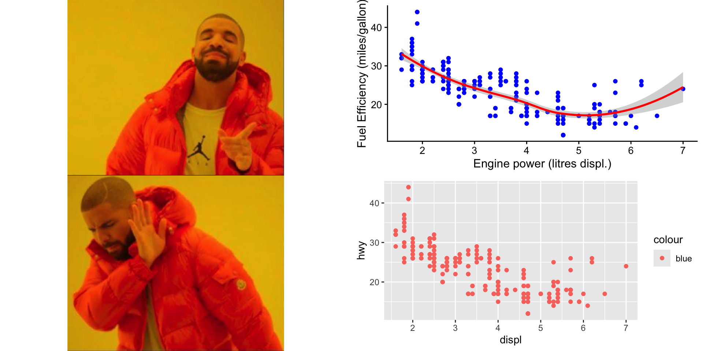

library(ggplot2)
library(cowplot)
library(magick)
yes_img <- here::here("images/yes.png")
no_img <- here::here("images/no.png")
yes_plot <- ggdraw() + draw_image(yes_img, scale = 1)
no_plot <- ggdraw() + draw_image(no_img, scale = 1)
bad_plot <-
ggplot(mpg, aes(x = displ, y = hwy, colour = "blue")) +
geom_point()
good_plot <-
ggplot(mpg, aes(x = displ, y = hwy)) +
geom_point(colour = "blue") +
geom_smooth(colour = "red") +
theme_half_open(12) +
labs(x = "Engine power (litres displ.)",
y = "Fuel Efficiency (miles/gallon)")
plot_grid(yes_plot, good_plot,
no_plot, bad_plot) showcase-your-research
CES Skills Seminars
José R. Ferrer-Paris
(a.k.a. Jose Ferrer; JR)
2023-12-08
Reproducible research
In CES Skills seminars:
- March 2023: Code for reproducible research
- April 2023: Share your data and code
- December 2023: Make reproducible documents!
Typical workflow
From code to presentation / report / manuscript:

Can we make this reproducible?
Yes!
In three (or so) easy steps
Step 1:
Write reproducible code that creates what you want to show (tables, figures, maps, etc.)

Step 2:
Choose your tool to combine text and code and create beautiful documents.


Step 2 and a half:
On top of that, there are many libraries that help making your code reactive and interactive (if you want to):


Step 3
Use and reuse your code in:
- presentations,
- reports,
- manuscripts,
- webpages,
- dashboards,
- blog posts,
- webapps, etc
Examples
- In this seminar using :
- Rmarkdown + knitr
- quarto + knitr
- quarto + jupyter
More examples
This presentation was prepared by:
José R. Ferrer-Paris ( 0000-0002-9554-3395 / @jrfep)
and is shared with license: Atribution 4.0 Internacional ( 4.0)
This presentation is available at:
This presentation was created using RStudio, Quarto v.1.3.433 with fontawesome extension, and reveal.js.
Original content, code and instructions available at: UNSW-codeRs/showcase-your-research
Background images from my iNaturalists observations:
- https://www.inaturalist.org/observations/181305576
- https://www.inaturalist.org/observations/60775658
Other images attributed in the slide text or source code.
R version 4.3.1 (2023-06-16)
Platform: aarch64-apple-darwin20 (64-bit)
Running under: macOS Sonoma 14.1.2
Matrix products: default
BLAS: /Library/Frameworks/R.framework/Versions/4.3-arm64/Resources/lib/libRblas.0.dylib
LAPACK: /Library/Frameworks/R.framework/Versions/4.3-arm64/Resources/lib/libRlapack.dylib; LAPACK version 3.11.0
locale:
[1] en_US.UTF-8/en_US.UTF-8/en_US.UTF-8/C/en_US.UTF-8/en_US.UTF-8
time zone: Australia/Sydney
tzcode source: internal
attached base packages:
[1] stats graphics grDevices utils datasets methods base
other attached packages:
[1] magick_2.8.1 cowplot_1.1.1 ggplot2_3.4.4
loaded via a namespace (and not attached):
[1] Matrix_1.5-4.1 gtable_0.3.4 jsonlite_1.8.7 dplyr_1.1.4
[5] compiler_4.3.1 tidyselect_1.2.0 Rcpp_1.0.11 splines_4.3.1
[9] scales_1.3.0 yaml_2.3.7 fastmap_1.1.1 lattice_0.21-8
[13] here_1.0.1 R6_2.5.1 labeling_0.4.3 generics_0.1.3
[17] knitr_1.45 tibble_3.2.1 munsell_0.5.0 rprojroot_2.0.4
[21] pillar_1.9.0 rlang_1.1.2 utf8_1.2.4 xfun_0.41
[25] cli_3.6.1 withr_2.5.2 magrittr_2.0.3 mgcv_1.8-42
[29] digest_0.6.33 grid_4.3.1 rstudioapi_0.15.0 lifecycle_1.0.4
[33] nlme_3.1-162 vctrs_0.6.5 evaluate_0.23 glue_1.6.2
[37] farver_2.1.1 fansi_1.0.5 colorspace_2.1-0 rmarkdown_2.25
[41] tools_4.3.1 pkgconfig_2.0.3 htmltools_0.5.7 CES Skills seminar / 8th December 2023 / JR Ferrer-Paris